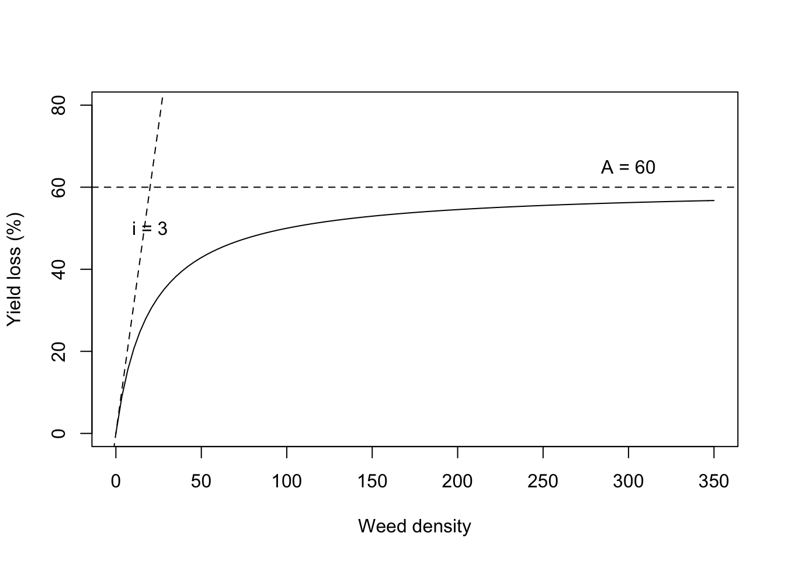
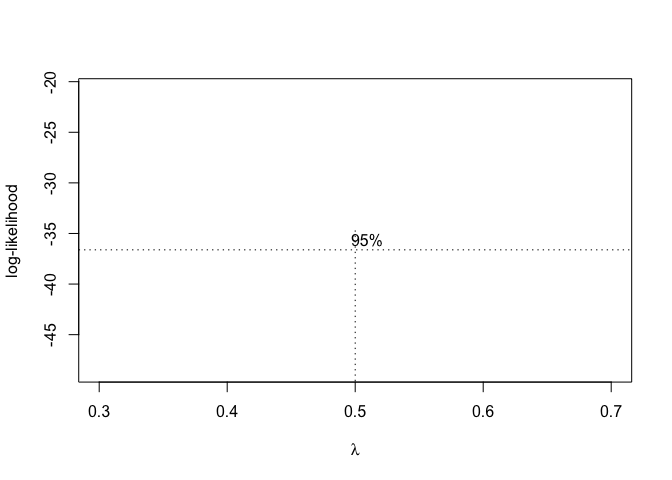

Capitolo 13 La regressione non-lineare
I fenomeni biologici, come ad esempio la crescita di una coltura, la cinetica degradativa degli erbicidi nel terreno, la risposta produttiva delle colture a densità crescenti di malerbe o a dosi crescenti di concime, la risposta fitotossica di una specie infestante alla dose di un erbicida, hanno in genere andamenti curvilinei, posseggono punti di massimo o minimo, flessi e, soprattutto, hanno frequentemente asintoti. Pertanto, difficilmente possono essere descritti con funzioni lineari, a meno che non ci accontentiamo di approssimare localmente l’andamento dei dati, in un intervallo ristretto della variabile indipendente.
Da un punto di vista pratico, è quindi fondamentale saper adattare ai dati funzioni curvilinee di ogni tipo. Introduciamo il problema con un esempio.
13.1 Caso studio: degradazione di un erbicida nel terreno
Un suolo è stato trattato con metamitron (un erbicida) alla concentrazione di 100 ng g1. Dopo essere stato opportunamente mescolato, è stato distribuito in 24 contenitori di alluminio e posto in cella climatica alla temperatura di 20 °C. In 8 tempi diversi dopo l’inizio del saggio, sono stati prelevati 3 contenitori e sottoposti ad analisi chimica per la determinazione della concentrazione residua dell’erbicida. I dati osservati sono disponibili nel package ‘aomisc,’ che deve quindi essere installato e caricato in memoria, secondo le istruzioni fornite nell’introduzione.
library(aomisc)
data(degradation)
head(degradation, 10)
## Time Conc
## 1 0 96.40
## 2 10 46.30
## 3 20 21.20
## 4 30 17.89
## 5 40 10.10
## 6 50 6.90
## 7 60 3.50
## 8 70 1.90
## 9 0 102.30
## 10 10 49.20Per prima cosa, plottiamo i dati osservati (Figura 13.1); vediamo che l’andamento della concentrazione nel tempo è chiaramente curvilineo e, di conseguenza, non possiamo utilizzare la regressione lineare semplice, esposta nel capitolo precedente.
Figure 13.1: Degradazione di metamitron nel terreno
In realtà, possiamo ancora utilizzare la stessa equazione generale che abbiamo introdotto nel capitolo 4, cioè:
\[ Y_i = f(X_i, \theta) + \varepsilon_i \]
In questa funzione, \(X\) è il tempo, \(Y\) la concentrazione, \(\theta\) sono i parametri del modello (da stimare) ed \(\varepsilon\) sono i residui, che si assumono omoscedastici e normalmente distribuiti. La differenza sta nel fatto che \(f\) è non lineare.
13.2 Scelta della funzione
Uno dei criteri fondamentali, seppur empirico, per la selezione di una funzione non-lineare è quello di considerarne la forma, in relazione al fenomeno biologico in studio. Per questo scopo, le equazioni sno spesso classificate in base alla forma, come:
- Lineari (es. retta)
- Convesse/concave (es. funzione esponenziale, funzione di potenza, funzione logaritmica, iperbole)
- Sigmoidali (es. funzione logistica, funzione di Gompertz)
- Curve con massimi/minimi (esequazione di Brain-Cousens, equazione di Braggs)
La descrizione di queste equazioni esula dallo scopo di questo libro, anche se il loro studio può essere di notevole interesse, anche per un biologo o un agronomo. Infatti, riuscire a tradurre nel linguaggio matematico un fenomeno biologico è forse uno degli obiettivi più affascinanti che un ricercatore si possa porre. Per chi fosse interessato, riportiamo in calce al capitolo alcuni interessanti riferimenti.
Noi ci poniamo nella situazione più comune, quella in cui la scelta del modello viene fatta in base all’esperienza o alle informazioni disponibili in letteratura. In questo caso, le conoscenze relative alla cinetica di degradazione dei composti chimici ci suggeriscono un’equazione di decadimento esponenziale (cinetica del primo ordine), così definita:
\[Y_i = A e^{-k \,X_i} + \varepsilon_i\]
dove A è la concentrazione iniziale e \(k\) e il tasso di degradazione (costante nel tempo). Come anticipato, la componente stocastica \(\varepsilon\) si assume normalmente distribuita e omoscedastica.
13.3 Stima dei parametri
Dopo aver definito \(f\), dobbiamo stimare i parametri \(A\) e \(k\). In generale esistono tre tecniche fondamentali:
- linearizzazione della funzione tramite trasformazione delle variabili;
- approssimazione della vera funzione curvilinea con una polinomiale in X;
- adattamento ai dati sperimentali di funzioni curvilinee, tramite metodiche di regressione non-lineare.
13.3.1 Linearizzazione della funzione
Nel caso specifico, prendendo il logaritmo di entrambe le parti dell’equazione esponenziale, otteniamo la seguente equazione:
\[ log(Y) = log(A) - k \, X \]
Quindi, se trasformiamo la Y (Concentrazione) nel suo logaritmo, possiamo utilizzare un modello di regressione lineare semplice per la stima dei parametri. Ovviamente, otterremo, come intercetta, il logaritmo della concentrazione iniziale e, come pendenza, otterremo un valore negativo per \(k\), in quanto la retta è decrescente.
mod <- lm(log(Conc) ~ Time, data=degradation)
summary(mod)
##
## Call:
## lm(formula = log(Conc) ~ Time, data = degradation)
##
## Residuals:
## Min 1Q Median 3Q Max
## -2.11738 -0.09583 0.05336 0.31166 1.01243
##
## Coefficients:
## Estimate Std. Error t value Pr(>|t|)
## (Intercept) 4.662874 0.257325 18.12 1.04e-14 ***
## Time -0.071906 0.006151 -11.69 6.56e-11 ***
## ---
## Signif. codes: 0 '***' 0.001 '**' 0.01 '*' 0.05 '.' 0.1 ' ' 1
##
## Residual standard error: 0.6905 on 22 degrees of freedom
## Multiple R-squared: 0.8613, Adjusted R-squared: 0.855
## F-statistic: 136.6 on 1 and 22 DF, p-value: 6.564e-11Le funzioni non-lineari che possono essere trasformate in lineari sono dette linearizzabili e hanno il vantaggio di semplificare molto i calcoli richiesti per la stima dei parametri. Un grave svantaggio è dato dal fatto che, trasformando la Y, si trasforma anche la distribuzione degli errori e quindi bisogna verificare che le assunzioni di base dei modelli lineari (omogeneità delle varianze e normalità dei residui) siano valide nella scala trasformata.
par(mfrow = c(1,2))
plot(mod, which = 1)
plot(mod, which = 2)Figure 13.2: Linearizzazione di una funzione esponenziale.
Il grafico dei residui (Figura 13.2 ) suggerisce che questi sono inversamente proporzionali ai valori attesi (più alto il logaritmo della concentrazione più bassi i residui). Questo fa sospettare che le varianze potrebbero essere omogenee sulla scala originale, impedendoci quindi di analizzare i dati nella scala trasformata.
Per completezza, dobbiamo comunque dire che, qualora le assunzioni di base fossero rispettate nella scala trasformata, il metodo della linearizzazione rappresenterebbe una tecnica corretta ed affidabile per l’analisi dei dati.
13.3.2 Approssimazione della vera funzione tramite una polinomiale in X
Molte andamenti non-lineari possono essere approssimati tramite funzioni polinomiali di ordine . Le funzioni polinomiali sono molto flessibili; contengono la funzione lineare come caso particolare (n = 1) e permettono di descrivere curvature anche molto complesse, semplicemente aumentando l’ ordine della funzione. In questo modo, è possibile ottenere un adattamento ai dati sperimentali teoricamente anche perfetto.
Le funzioni polinomiali sono un tipico esempio di funzioni curvilinee, ma lineari nei parametri; esse possono essere trattate ricorrendo alle metodiche di calcolo normalmente utilizzate per la regressione lineare.
Gli svantaggi delle funzioni polinomiali sono relativi al fatto che queste presentano raramente giustificazione biologica. Per esempio, con le funzioni polinomiali non è possibile descrivere relazioni asintotiche, che sono invece molto comuni in biologia. Nel nostro esempio si potrebbe utilizzare una funzione polinomiale di II grado (parabola), che, con il suo braccio decrescente, potrebbe descrivere la degradazione di un erbicida in modo sufficientemente buono.
Eseguiamo il fitting con R, utilizzando l’usuale funzione ‘lm().’ Successivamente, utilizziamo la funzione ‘predict()’ per generare valori attesi per una sequenza temporale da 0 a 70 giorni e plottarli.
mod2 <- lm(Conc ~ Time + I(Time^2), data=degradation)
pred <- predict(mod2, newdata = data.frame(Time = seq(0, 70, by = 0.1)))
plot(Conc ~ Time, data=degradation)
lines(pred ~ seq(0, 70, by = 0.1), col = "red")Figure 13.3: Approssimazione della cinetica di degradazione con una funzione polinomiale (parabola)
Vediamo come la funzione inserita, mentre approssima abbastanza bene i dati nell’intervallo da 0 a 40 giorni, successivamente mostra una ricrescita, che non ha alcun senso biologico (Figura 13.3 ).
In generale, le polinomiali sono utilizzate quando non si hanno conoscenze ‘a priori’ sul fenomeno in studio e sia necessario approssimarlo con una funzione curvilinea, in un intervallo della X molto ristretto, senza la necessità di estrapolare previsioni al di fuori di questo intervallo. Per questi motivi, il campo d’impiego delle funzioni polinomiale è abbastanza ristretto.
13.3.3 Minimi quadrati non-lineari
La terza strada, quella più percorsa, è utilizzare metodiche di regressione non-lineare, basate su algoritmi numerici di ricerca delle stime dei minimi quadrati, come il metodo di Gauss-Newton. Nel principio, questo metodo funziona partendo da stime iniziali approssimate dei parametri, che vengono corrette in ogni iterazione successiva fino ad ottenere la convergenza sui valori che minimizzano lo scostamento tra i valori osservati e quelli previsti dalla funzione. Ovviamente, trattandosi di metodi iterativi, le stime ottenute sono solo un’approssimazione dei valori reali, ma più che accettabile per le nostre finalità.
13.4 La regressione non-lineare con R
La funzione più comune in R per la parametrizzazione di funzioni non-lineari è ‘nls().’ Nella chiamata alla funzione dobbiamo anche fornire stime iniziali per i valori dei parametri. Ottenere queste stime è facile pensando al loro significato biologico: \(A\) è la concentrazione iniziale e quindi una stima ragionevole è data dal valor medio osservato al tempo 0 (100). Il parametro \(k\) è invece il tasso di degradazione relativo; possiamo notare che nei primi 10 giorni la concentrazione si riduce della metà circa, cioè si abbassa mediamente un po’ più del 5% al giorno. Possiamo quindi assegnare a \(k\) un valore iniziale pari a 0.05.
modNlin <- nls(Conc ~ A*exp(-k*Time),
start=list(A=100, k=0.05),
data=degradation)
summary(modNlin)
##
## Formula: Conc ~ A * exp(-k * Time)
##
## Parameters:
## Estimate Std. Error t value Pr(>|t|)
## A 99.634902 1.461047 68.19 <2e-16 ***
## k 0.067039 0.001887 35.53 <2e-16 ***
## ---
## Signif. codes: 0 '***' 0.001 '**' 0.01 '*' 0.05 '.' 0.1 ' ' 1
##
## Residual standard error: 2.621 on 22 degrees of freedom
##
## Number of iterations to convergence: 5
## Achieved convergence tolerance: 4.33e-0713.5 Verifica della bontà del modello
Le assunzioni parametriche di base relative ai modelli non-lineari sono le stesse dei modelli lineari e, di conseguenza, gli strumenti diagnostici sono analoghi. Bisogna tuttavia menzionare il fatto che, dato l’impiego di metodi iterativi per la ricerca dei valori dei parametri, tutti i risultati a cui si perviene (stima dei parametri, della varianza residua e numero dei gradi di libertà relativi) sono solo una approssimazione di quelli reali. Per questo motivo, nel caso non-lineare i metodi grafici (analisi dei residui) sono largamente preferiti.
13.5.1 Analisi grafica dei residui
L’analisi grafica dei residui viene eseguita in modo del tutto analogo a quanto visto per la regressione lineare. In primo luogo, verifichiamo le assunzioni di base di normalità e omoscedasticità, mediante il metodo ‘plot()’ per l’oggetto ‘nls,’ che è disponibile nel package ‘aomisc,’ già caricato in precedenza.
par(mfrow=c(1,2))
plot(modNlin, which = 1)
plot(modNlin, which = 2)Figure 13.4: Analisi grafica dei residui per la regressione non-lineare, relativa alla degradazione di metamitron nel suolo
La Figura 13.4 non mostra deviazioni rispetto agli assunti di base. Pertanto, proseguiamo l’analisi grafica della bontà di adattamento, verificando il plot dei valori attesi e di quelli osservati (Figure 13.5). Questo grafico, per gli oggetti ‘nls’ può essere ottenuto velocemente utilizzando la funzione ‘plotnls(),’ nel package ‘aomisc.’
library(lattice)
nlstools::plotfit(modNlin, smooth = T)Figure 13.5: Cinetica di degradazione di metamitron nel suolo: i punti mostrano i valori osservati, la linea mostra i valori attesi con l’equazione esponziale.
13.5.2 Test F per la mancanza di adattamento (approssimato)
Se abbiamo le repliche (come nellesempio in studio) possiamo effettuare il fitting di un modello ANOVA. Come abbiamo detto nel capitolo precedente, nel modello ANOVA i valori attesi sono costituiti dalle medie dei trattamenti (tempi e livelli di densità, rispettivamente per i due esempi) e lo scostamento di ogni dato rispetto alla ‘sua’ media è evidentemente dovuto solo all’errore sperimentale ‘puro.’ Nel modello di regressione, invece, esiste una componente aggiuntiva di errore, cioè lo scostamento di ogni media dalla curva di regressione. Questa componente si chiama mancanza d’adattamento e può essere stimata per differenza.
modAov <- lm(Conc ~ factor(Time), data=degradation)
anova(modAov)
## Analysis of Variance Table
##
## Response: Conc
## Df Sum Sq Mean Sq F value Pr(>F)
## factor(Time) 7 24698.4 3528.3 415.29 < 2.2e-16 ***
## Residuals 16 135.9 8.5
## ---
## Signif. codes: 0 '***' 0.001 '**' 0.01 '*' 0.05 '.' 0.1 ' ' 1
SSa <- anova(modAov)[2,2]
SSa
## [1] 135.9387Inseriamo il tempo come fattore (quindi variabile qualitativa, non quantitativa) e notiamo che la devianza del residuo è pari a 135.9. La varianza del residuo del modello di regressione si ottiene facendo la somma dei quadrati degli scarti dei dati rispetto ai valori attesi.
SSr <- sum(residuals(modNlin)^2)
SSr
## [1] 151.1766Come ci aspettavamo, il modello di regressione ha una devianza più alta, in quanto questa contiene la componente di mancanza d’adattamento, pari alla differenza tra SSa e SSr, cioè:
SSl <- SSr - SSa
SSl
## [1] 15.23792Mentre la devianza del residuo dell’ANOVA ha 16 gradi di libertà (24 dati meno 8 parametri stimati), quella del residuo della regression ha 22 gradi di libertà (24 dati meno 2 parametri stimati). La devianza del ‘lack of fit’ ha quindi 22 - 16 = 6 gradi di libertà. La varianza del lack of fit è quindi pari a:
SSl/6
## [1] 2.539654Possiamo quindi confrontare formalmente, con un test di F, le due varianze dell’errore puro (dall’ANOVA: 8.5) e quella della mancanza di adattamento, per vedere se quest’ultima è significativamente più ‘grande’ di quella dell’errore puro. L’ipotesi nulla è che la mancanza d’adattamento non è rilevante ed il test di F è:
(Fvalue <- (SSl/6) / anova(modAov)[2,3]) #F value
## [1] 0.2989175
pf(0.2989, 6, 16, lower.tail=F)
## [1] 0.928442Chiaramente il test è non significativo. A questo risultato si arriva facilmente utilizzando la funzione ‘anova()’ e passandole i due modelli da confrontare anche se uno dei due è un modello di regressione non-lineare.
anova(modNlin, modAov)
## Analysis of Variance Table
##
## Model 1: Conc ~ A * exp(-k * Time)
## Model 2: Conc ~ factor(Time)
## Res.Df Res.Sum Sq Df Sum Sq F value Pr(>F)
## 1 22 151.18
## 2 16 135.94 6 15.238 0.2989 0.928413.5.3 Errori standard dei parametri
Un’altra valutazione importante da fare è quella relativa agli errori standard delle stime dei parametri, che non debbono mai essere superiori alla metà del valore del parametro stimato, cosa che in questo caso è pienamente verificata. Abbiamo già spiegato come, se l’intervallo di confidenza del parametro contiene lo zero, evidentemente quel parametro potrebbe essere rimosso dal modello senza che il fitting peggiori significativamente. Nel nostro esempio, se il tasso di degradazione fosse stato non significativamente diverso da zero, avremmo avuto un’indicazione per sostenere che l’erbicida, di fatto, non mostra degradazione nel tempo.
13.5.4 Coefficienti di determinazione
Abbiamo visto che il residuo della regressione è pari a 151.2 con 16 gradi di libertà. La devianza totale dei dati (somma dei quadrati degli scarti rispetto alla media generale) è invece:
SSt <- deviance(lm(Conc ~ 1, data=degradation))ed ha 23 gradi di libertà. La differenza:
SSt - SSr
## [1] 24683.13costituisce la devianza spiegata dalla regressione. Il coefficente di determinazione \(R^2\) è quindi:
\[R^2 = \frac{SSt - SSr}{SSt} = \frac{24683.13}{24834.3} = 0.994\]
Il valore ottenuto attesta un ottimo adattamento, in quanto è vicino ad 1. Bisogna ricordare che, pur essendo utilizzato in modo pressoché ubiquitario, il coefficiente di determinazione per i modelli non-lineari fornisce solo un’indicazione abbastanza grezza sulla bontà del modello, in quanto può rimanere alto anche quando vi sono sistematiche violazioni rispetto alla forma della funzione.
Oltre al coefficiente di determinazione tradizionale, può essere utilizzato anche il coefficiente di determinazione corretto, dato dalla proporzione di varianza (MS) spiegata dalla regressione:
\[R_a^2 = 1 - \frac{MS_{residuo} }{MS_{tot} } = 0.9936\]
L’\(R^2\) corretto è sempre più basso dell \(R^2\) e tende a penalizzare i modelli con molti parametri. Di conseguenza, favorisce i modelli semplici, nel rispetto del principio del rasoio di Occam.
I due coefficienti di determinazione (tradizionale e corretto) possono essere ottenuti con la funzione ‘R2nls(),’ disponibile nel package ‘aomisc.’
R2nls(modNlin)
## $PseudoR2
## [1] 0.9939126
##
## $R2
## [1] 1.00182113.6 Funzioni lineari e nonlineari dei parametri
Gli studi di degradazione, in genere, richiedono la determinazione della semivita. E’facile vedere che questa può essere ricavata dalla funzione di degradazione in questo modo:
\[\frac{A}{2} = A \exp ( - k \,\, t_{1/2})\]
da cui:
\[t_{1/2} = - \frac{ \log \left( {\frac{1}{2}} \right) }{k}\]
Vediamo insomma che la semivita \(t_{1/2}\) è una funzione non-lineare di \(k\) e può essere ricavata facilmente come:
-log(1/2) / coef(modNlin)[2]
## k
## 10.33945Si pone ora il problema di ricavare l’errore standard di questa stima e/o i suoi intervalli di confidenza. La legge di propagazione degli errori ci insegna a calcolare gli errori standard per le combinazioni lineari dei parametri e ne abbiamo parlato nel capitolo 9. Per le combinazioni non-lineari, come quella che abbiamo utilizzato per calcolare la semivita, esiste un’estensione chiamata ‘metodo delta.’ Non ne parleremo in dettaglio, in quanto si tratta di un argomento che richiede alcune conoscenza di analisi matematica; tuttavia, mostreremo un esempio del codice R da utilizzare per applicarlo.
In particolare, possiamo utilizzare la funzione deltaMethod() del package ‘car.’ Per evitare problemi, consiglio di estrarre le stime dei parametri dall’oggetto ‘nls’ ed assegnare a queste nomi corrispondenti a quelli utilizzati nella definizione della funzione di trasformazione, che deve essere fornita come stringa.
library(car)
coefs <- coef(modNlin)
names(coefs) <- c("A", "k")
strFun <- "-log(0.5)/k"
deltaMethod(object=coefs, g=strFun, vcov.=vcov(modNlin))
## Estimate SE 2.5 % 97.5 %
## -log(0.5)/k 10.33945 0.29102 9.76907 10.9113.7 Previsioni
In taluni casi, abbastanza frequenti per la verità, l’ analisi di regressione viene eseguita per stimare o predire il valore della Y corrispondente ad una data X (calibrazione), oppure della X corrispondente ad un dato Y (esempio: determinazione delle dosi efficaci). Normalmente il problema si riduce alla definizione di un’equazione predittiva; nel caso della calibrazione essa coincide con l’equazione originale, nell’altro caso con la sua inversa. Utilizzando queste equazioni è possibile ottenere il valore cercato e il suo errore standard, tramite il metodo delta.
Analogamente alla regressione lineare, per la calibrazione possiamo utilizzare il metodo ‘predict()’; ad esempio, per calcolare la concentrazione dell’erbicida ai tempi 10, 15 e 20 giorni utilizziamo il codice sottostante, ricordando che i valori del tempo debbono essere forniti sotto forma di data frame, con una sola colonna, dal nome corrispondente a quello del regressore nel dataset originale
predict(modNlin, newdata=data.frame(Time=c(10, 15, 20)) )
## [1] 50.96413 36.44947 26.06860Come abbiamo visto, l’output non fornisce gli errori standard di queste stime. Tuttavia, dato che la calibrazione non è altro che una combinazione dei parametri del modello, possiamo ottenere lo stesso risultato utilizzando il metodo delta.
strFun <- "A*exp(-k*10)"
deltaMethod(object=coefs, g=strFun, vcov.=vcov(modNlin))
## Estimate SE 2.5 % 97.5 %
## A * exp(-k * 10) 50.96413 0.91006 49.18044 52.748
strFun <- "A*exp(-k*15)"
deltaMethod(object=coefs, g=strFun, vcov.=vcov(modNlin))
## Estimate SE 2.5 % 97.5 %
## A * exp(-k * 15) 36.44947 0.92053 34.64526 38.254
strFun <- "A*exp(-k*20)"
deltaMethod(object=coefs, g=strFun, vcov.=vcov(modNlin))
## Estimate SE 2.5 % 97.5 %
## A * exp(-k * 20) 26.06860 0.87816 24.34744 27.79La funzione inversa è:
\[X = - \frac{log \left( \frac{Y}{A} \right)}{k} \]
Per calcolare il tempo necessario a raggiungere una certa concentrazione (es. 10 mg/g), possiamo ancora utilizzare il metodo delta.
strFun <- "-(log(10/A)/k)"
deltaMethod(object=coefs, g=strFun, vcov.=vcov(modNlin))
## Estimate SE 2.5 % 97.5 %
## -(log(10/A)/k) 34.29237 0.88714 32.55360 36.03113.8 Gestione delle situazioni ‘patologiche’
In alcuni casi la verifica della bontà del modello mette in luce situazioni patologiche. In particolare, potrebbe capitare che il modello non sia adatto ai dati, o, al contrario, che i dati non siano adatti al modello. Nel primo caso è necessario trasformare il modello, mentre nel secondo caso l’azione più comune è quella di trasformare i dati. Vediamo queste due operazioni un po’ più nel dettaglio.
13.8.1 Trasformazione del modello
A volte può capitare che il modello non si adatti ai dati. Ad esempio, perché la cinetica degradativa non è del primo ordine ma è lineare, oppure più concava di quello che il modello esponenziale riesca a prevedere. In una situazione del genere, la cosa migliore è cambiare equazione, utilizzandone una che mostri un miglior adattamento ai dati sperimentali.
13.8.2 Trasformazione dei dati
Se non è il modello ad essere mal definito, ma sono invece i dati a non conformarsi alle assunzioni di base della regressione, è necessario valutare l’esigenza di una trasformazione stabilizzante.
Nelle regressioni non-lineari, come in quelle lineari, è possibile utilizzare la trasformazione di Box e Cox, facendo attenzione, però, al fatto che la sola trasformazione della variabile dipendente comporta anche la modifica della scala sulla quale vengono stimati i parametri, che quindi non conservano il loro valore biologico. Ad esempio, nel modello esponenziale, il parametro \(A\) rappresenta la concentrazione inziale e, se i dati vengono trasformati in logaritmo, l’unità di misura di \(A\) risulta anch’essa trasformata nella nuova scala logaritmica.
Per questo motivo, dato che le regressioni non-lineari vengono spesso eseguite perchè si è interessati alle stime dei parametri nella loro unità di misura originale, si preferisce adottare la cosiddetta tecnica della “trasformazione di entrambe le parti,” o metodo TBS (“Transform Both Sides”). Con questo metodo, vengono trasformati sia i dati osservati per la variabile dipendente, sia il modello:
\[Y^\lambda = f(X)^\lambda\]
Con questa tecnica, le stime dei parametri sono nella loro scala originale, come se la trasformazione non fosse stata eseguita per niente.
Con un oggetto ‘nls,’ possiamo utilizzare la funzione ‘boxcox’ nel package ‘aomisc,’ che trova il valore ottimale di \(\lambda\) ed esegue la trasformazione. La funzione ‘summary()’ restituisce la stima dei parametri dopo la trasformazione.
class(modNlin)
## [1] "nls"
modNlin2 <- boxcox(modNlin)
modNlin2
## Nonlinear regression model
## model: bcFct1(Conc) ~ bcFct2(A * exp(-k * Time))
## data: degradation
## A k
## 99.41873 0.06665
## residual sum-of-squares: 51.88
##
## Number of iterations to convergence: 2
## Achieved convergence tolerance: 7.511e-06
summary(modNlin2)
##
## Formula: bcFct1(Conc) ~ bcFct2(A * exp(-k * Time))
##
## Parameters:
## Estimate Std. Error t value Pr(>|t|)
## A 99.418732 2.091374 47.54 <2e-16 ***
## k 0.066654 0.002042 32.65 <2e-16 ***
## ---
## Signif. codes: 0 '***' 0.001 '**' 0.01 '*' 0.05 '.' 0.1 ' ' 1
##
## Residual standard error: 1.536 on 22 degrees of freedom
##
## Number of iterations to convergence: 2
## Achieved convergence tolerance: 7.511e-06Invece che far scegliere alla funzione ‘boxcox’ il valore di \(\lambda\) ottimale, possiamo imporlo noi, con l’argomento ‘lambda.’
modNlin3 <- boxcox(modNlin, lambda = 0.5)
summary(modNlin3)
##
## Formula: bcFct1(Conc) ~ bcFct2(A * exp(-k * Time))
##
## Parameters:
## Estimate Std. Error t value Pr(>|t|)
## A 99.532761 4.625343 21.52 2.87e-16 ***
## k 0.067068 0.002749 24.40 < 2e-16 ***
## ---
## Signif. codes: 0 '***' 0.001 '**' 0.01 '*' 0.05 '.' 0.1 ' ' 1
##
## Residual standard error: 0.9196 on 22 degrees of freedom
##
## Number of iterations to convergence: 1
## Achieved convergence tolerance: 7.541e-06Gli outputs mostrano che, nonostante la trasformazione, i parametri hanno conservato la loro scala originale e, di conseguenza, il loro significato biologico.
13.9 Per approfondire un po’…
13.9.1 Riparametrizzazione delle funzioni non-lineari
In alcuni casi abbiamo a disposizione modelli matamatici che non sono immediatamente utili per la regressione non-lineare, in quanto non si adattano alla tipologia di dati in nostro possesso o non sono adeguati alle nostre finalità. Per questo motivo, essi debbono essere opportunamente riparametrizzati, cioè posti in una differente forma algebrica. Illustriamo meglio questo aspetto con un esempio, relativo ad un esperimento nel quale è stata valutata la produzione del girasole a densità crescenti di piante infestanti, da 0 a 100 piante per metro quadrato. I risultati ottenuti sono riportati nel dataset ‘competition,’ che è disponibile nel package ‘aomisc.’ L’esperimento è stato organizzato a randomizzazione completa.
library(aomisc)
data(competition)
head(competition)
## Dens Yield
## 1 0 29.58587
## 2 10 20.16776
## 3 20 17.82846
## 4 30 9.02289
## 5 40 13.41521
## 6 50 12.80159Secondo la letteratura, la relazione tra perdite produttive e densità delle piante infestanti può essere descritta con una funzione iperbolica di questo tipo (Cousens, 1985):
\[YL = \frac{iD}{1 + \frac{iD}{A}}\]
Dove \(YL\) sta per perdite produttive (Yield Loss) percentuali, \(D\) è la densità delle piante infestanti, \(i\) è la pendenza nel punto iniziale (D = 0) ed \(A\) è la perdita produttiva percentuale massima asintotica. Il grafico è mostrato qui sotto.

Figure 13.6: Relazione iperbolica tra fittezza delle piante infestanti e perdite produttive. È visualizzata la pendenza iniziale (i) e la perdita produttiva massima asintotica (A).
Normalmente, in campo non vengono determinate le perdite produttive, bensì le produzioni, come nel caso dell’esperimento relativo al dataset d’esempio. Di conseguenza, il modello iperbolico presentato più sopra non è adatto ai nostri dati, in quanto rappresenta una funzione crescente, mentre i nostri dati mostrano una variabile dipendente (produzione) che decresce al crescera della variabile indipendente (fittezza dell piante infestanti). Pertanto, abbiamo due possibilità:
- modificare il dataset, esprimendo i dati in termini di perdite produttive percentuali;
- modificare il modello, per utilizzare la produzione come variabile dipendente, al posto della perdita produttiva.
La prima strada è più agevole, ma ha un problema importante. Infatti, per calcolare la perdita produttiva percentuale nella parcella \(i\), possiamo utilizzare la seguente equazione:
\[YL_i = \frac{YWF - Y_i}{YWF} \times 100\]
dove \(YWF\) è la produzione nel testimone non infestato e \(Y_i\) è la produzione nella parcella \(i\). Trattandosi di una prova replicata, abbiamo quattro valori di produzione corrispondenti a YWF; quale usiamo? La scelta più logica è quella di utilizzare il valore medio, cioè;
YWF <- mean(competition$Yield[competition$Dens==0])
YWF
## [1] 30.42637Operando la trasformazione otteniamo una nuova variabile (YL), che possiamo sottoporre a regressione non-lineare, con il modello iperbolico precedentemente indicato. Per ottenere i valori iniziali, possiamo considerare che, con 10 piante per metro quadrato, la perdita produttiva è del 30-35%. Quindi si può immaginare che la prima pianta infestante aggiunta possa (quella che fa più danni) possa causare perdite produttive del 6-7% circa. Vediamo inoltre che la perdita produttiva massima osservata è del 70% circa, quindi possiamo immaginare una perdita produttiva massima asintotica del 75%.
YL <- (YWF - competition$Yield)/YWF * 100
mod1 <- nls(YL ~ i * Dens / (1 + i * Dens / A),
start = list(i = 6.5, A = 75),
data = competition)
summary(mod1)
##
## Formula: YL ~ i * Dens/(1 + i * Dens/A)
##
## Parameters:
## Estimate Std. Error t value Pr(>|t|)
## i 8.207 1.187 6.914 1.93e-08 ***
## A 75.049 2.353 31.894 < 2e-16 ***
## ---
## Signif. codes: 0 '***' 0.001 '**' 0.01 '*' 0.05 '.' 0.1 ' ' 1
##
## Residual standard error: 6.061 on 42 degrees of freedom
##
## Number of iterations to convergence: 3
## Achieved convergence tolerance: 7.497e-06Qual è il problema di questo approccio? Se ci facciamo caso, questo modello prevede che, quando la fittezza delle piante infestanti è 0 (testimone non infestato), la perdita produttiva è 0. Di conseguenza la produzione osservata deve essere pari alla media del testimone non infestato. Insomma, abbiamo involontariamente imposto il vincolo YWF = 30.42637, anche se sappiamo che questo vincolo non ha alcuna giustificazione, dato che la media della popolazione da cui le nostre quattro osservazioni non inerbite derivano, difficilmente coincide con la media osservata.
Invece che riorganizzare i dati perché si adattino al modello, potremmo forse tentare di riorganizzare il modello, affinchè si adatti meglio ai dati.
Dalla precedente funzione si ricava che:
\[Y_i = YWF - \frac{YL \times YWF}{100} = YWF\left( {1 - \frac{YL}{100}} \right)\]
che mostra come la produzione in una qualunque parcella (\(Y_i\)) può essere ottenuta in funzione della perdita produttiva e di YWF. Considerando l’equazione precedente e il modello delle perdite produttive, possiamo scrivere:
\[Y_i = YWF\left( {1 - \frac{iD}{100\left( {1 + \frac{iD}{A}} \right)}} \right)\]
Questa equazione consente di utilizzare i dati produttivi osservati come variabile dipendente e di stimare i parametri competitivi \(i\) ed \(A\), insieme alla produzione stimata in asssenza di competizione.
modComp <- nls(Yield ~ YWF * (1 - (i*Dens)/(100 * (1 + i * Dens/A))),
list(YWF = 30.4, i = 6.5, A = 75),
data=competition)
summary(modComp)
##
## Formula: Yield ~ YWF * (1 - (i * Dens)/(100 * (1 + i * Dens/A)))
##
## Parameters:
## Estimate Std. Error t value Pr(>|t|)
## YWF 30.472 0.930 32.765 < 2e-16 ***
## i 8.240 1.387 5.943 5.22e-07 ***
## A 75.073 2.422 30.998 < 2e-16 ***
## ---
## Signif. codes: 0 '***' 0.001 '**' 0.01 '*' 0.05 '.' 0.1 ' ' 1
##
## Residual standard error: 1.866 on 41 degrees of freedom
##
## Number of iterations to convergence: 3
## Achieved convergence tolerance: 9.819e-06Vediamo che, in questo caso, la produzione nel testimone non infestato non è più fissata al valor medio osservato, ma è stimata utilizzando tutti i dati sperimentali ed è, pertanto, più precisa.
Pur essendo entrambi gli approcci corretti, il secondo è certamente più elegante e attendibile.
13.9.2 Altre letture
- Bates, D.M., Watts, D.G., 1988. Nonlinear regression analysis & its applications. John Wiley & Sons, Inc., Books.
- Bolker, B.M., 2008. Ecological models and data in R. Princeton University Press, Books.
- Carroll, R.J., Ruppert, D., 1988. Transformation and weighting in regression. Chapman and Hall, Books.
- Ratkowsky, D.A., 1990. Handbook of nonlinear regression models. Marcel Dekker Inc., Books.
- Ritz, C., Streibig, J.C., 2008. Nonlinear regression with R. Springer-Verlag New York Inc., Books.